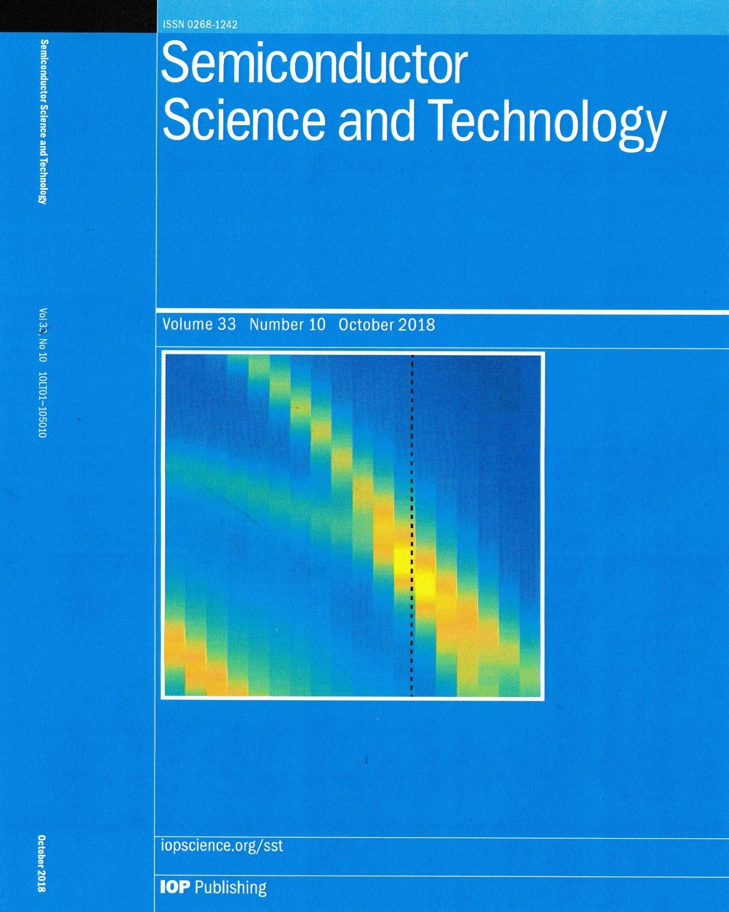

research . publications
- S. Banerji, M. Meem, A. Majumder, C. Dvonch, B. Sensale-Rodriguez, and R. Menon. Ultra-thin Near Infrared camera enabled by a flat multi-level diffractive lens. Optics Letters, November 2019.
- S. Banerji, M. Meem, A. Majumder, C. Dvonch, B. Sensale-Rodriguez, and R. Menon. Single flat lens enabling imaging in the short-wave infra-red (SWIR) band. OSA Continuum, Volume-2(10), October 2019.
- S. Banerji, M. Meem, A. Majumder, B. Sensale-Rodriguez, and R. Menon. Imaging over an unlimited bandwidth with a single diffractive surface. arXiv:1907.06251 [physics.optics]
- M. Meem, S. Banerji, A. Majumder, F. G. Vasquez, B. Sensale-Rodriguez, and R. Menon. Broadband lightweight flat lenses for longwave-infrared imaging. Proceedings of the National Academy of Sciences, October 2019.
- S. Banerji, M. Meem, A. Majumder, F. G. Vasquez, B. Sensale-Rodriguez, and R. Menon. Imaging with flat optics: metalenses or diffractive lenses? Optica, Volume 6(6), June 2019.
- M. Meem, S. Banerji, A. Majumder, F. G. Vasquez, B. Sensale-Rodriguez, and R. Menon. Flat Lenses for Ultra-lightweight Longwave-Infrared Broadband Imaging. CLEO, San Jose, CA, USA, May 2019.
- A. Majumder, S. Banerji, K. Miyagawa, M. Meem, M. Mondol, B. Sensale-Rodriguez, and R. Menon Programmable metamaterials & metasurfaces for ultra- compact multi-functional photonics. CLEO, San Jose, CA, USA, May 2019.
- S. Banerji, and B. Sensale-Rodriguez. 3D-printed diffractive terahertz optical elements through computational design. In Micro-and Nanotechnology Sensors, Systems, and Applications XI (Volume 10982, p. 109822X). International Society for Optics and Photonics, Baltimore, MD, USA, May 2019.
[Invited]
- S. Banerji, and B. Sensale-Rodriguez. A Computational Design Framework for Efficient, Fabrication Error-Tolerant, Planar THz Diffractive Optical Elements. Scientific Reports, Volume 9, April 2019.
- S. Arezoomandan, H. Condori Quispe, A. Chanana, P. Gopalan, S. Banerji, A. Nahata and B. Sensale-Rodriguez. Graphene–dielectric integrated terahertz metasurfaces. Semiconductor Science and Technology, Volume-33(10), September 2018.
[Invited][Cover Feature]

- S.Banerji, A. Chanana, H. Condori, S. Arezoomandan, A. Nahata, and B. Sensale-Rodriguez. Demonstration of computational THz diffractive optical elements enabled by a modified direct binary search technique. 43rd International Conference on Infrared, Millimeter and Terahertz Waves, Nagoya, NP, Japan, September 2018.
[Best Student Paper Award (Runners Up)]
- S. Banerji, A. Chanana, H. Condori, A. Nahata, and B. Sensale-Rodriguez. Modified direct binary search: an algorithm for designing aberration corrected diffractive THz lenses. SPIE Optics + Photonics, San Diego, CA, USA, August 2018.
- S. Banerji, M. Meem, A. Chanana, A. Nahata, R. Menon and B. Sensale-Rodriguez. From Visible to THz: Planar Optics for Lightweight, Small Form-Factor High-Precision, Energy Efficient Laser Applications. São Paulo School of Advanced Science (SPSAS) + XVI Jorge André Swieca School on Non linear and Quantum Optics, Sao Paulo, SP, Brazil, July 2018.
[Student Poster Award]
- S. Banerji, H. Condori, A. Chanana, A. Nahata, and B. Sensale-Rodriguez. Aberration Rectified THz Beam Focusing via Diffractive Lens Design Using a Modified Direct Binary Search Algorithm. IEEE International Symposium on Antennas and Propagation and USNC-URSI National Radio Science Meeting, Boston, MA, USA, July 2018.
- S. Banerji, A. Chanana, H. Condori, A. Nahata, and B. Sensale-Rodriguez. Efficient Design of Diffractive THz Lenses for Aberration Rectified Focusing via Modified Binary Search Algorithm. CLEO: Science and Innovations, San Jose, CA, USA, May 2018.
- S. Banerji. Simulation Tool to Design Diffractive Lenses. Undergraduate Computer Science Capstone Project Seminar Series, University of Utah, Salt Lake City, UT, USA, May 2017.
[Invited]
- Y. Wang, S. Banerji, J. Mao, S. Arezoomandan, B. Sensale Rodriguez, and S. Blair. Modification of UV Surface Plasmon Resonances in Aluminum Hole-Arrays with Graphene. SPIE Optics + Photonics, San Diego, CA, USA, August 2017.
- S. Banerji, Y. Wang, J. Mao, S. Arezoomandan, S. Blair, B. Sensale Rodriguez. UV Surface Plasmon Resonance Modification in Aluminum Nanohole-Arrays Using Graphene. Electronic Materials Conference (EMC), Notre Dame, IN, USA, June 2017.
- Y. Wang, S. Banerji, J. Mao, S. Arezoomandan, B. Sensale Rodriguez, and S. Blair. Modification of UV Surface Plasmon Resonances in Aluminum Hole-Arrays with Graphene. CLEO: Science and Innovations, San Jose, CA, USA, May 2017.
- S. Banerji, and A. Deyasi. Simulating Reflectivity Property for Propagating Wave inside One-Dimensional Photonic Crystal with Different Material Systems Journal of Electron Devices, Volume-21, March 2015.
- S. Banerji. Group Theoretic Approach to Study Transfer Matrix Method in One Dimensional Photonic Crystals. GESJ: Physics, Volume-11(1), July 2014.
- S. Banerji, S. Bose, A. Halder, S. Mandal, and A. Deyasi. Comprehensive Review on Band Structure, Density of States and Wave Propagation inside One-Dimensional Photonic Crystal. International Journal for Research in Applied Science and Engineering Technology, Volume-2(4), April 2014.
- S. Banerji, A. Halder, A. Deyasi, S. Bose, and S. Mandal. Analytical Computation of Density of States of One-Dimensional Photonic Crystal under Polarized Incident Wave for Different Materials. Journal of Electron Devices, Volume-19, April 2014.
- A. Halder, S. Banerji, S. Bose, S. Mandal, and A. Deyasi. Computing Density of States of One-Dimensional Photonic Crystal under P-Polarized Incident Wave. International Journal of Modern Communication Technologies & Research, Volume-2 (3), March 2014.
- S. Banerji. To Study the Effect of Grating Length on Propagating Modes in Bragg Filters with Al(x)Ga(1-x)N/GaN Material Composition. International Journal of Advanced Science and Technology, Volume-63, February 2014.